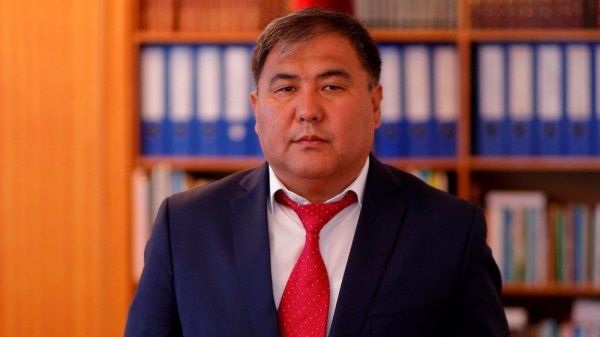

Зулуев Б.Б. - главный редактор, ректор Ошского государственного педагогического университета, доктор педагогических наук, профессор (педагогические науки);
Абсатаров Р.Р. - заместитель главного редактора, проректор по науке, кандидат биологических наук, доцент, ОшГПУ (эколог);
Койлубаева Э.Ы. - ответственный секратарь, редактор научного журнала “Вестник ОшГПУ”
Физико-математические науки
Таиров М.М. – доктор физико-математических наук, профессор, ОшГПУ (физика)
Мадраимов С.М. – кандидат педагогических наук, профессор, ОГПУ (высшая и прикладная
математика)
Арынбаев Э.К. - кандидат педагогических наук, доцент, ОшГПУ (информатика)
Педагогические науки
АминовТ.М. – доктор педагогических наук, профессор БГПУ имени М. Акмулла, Уфа, Россия (педагогика)
Алимбеков А.А. – доктор педагогических наук, профессор, КТУ “Манас” (педагогика)
Миңбаева К.Б. – кандидат педагогических наук, доцент, ОшГПУ (педагогика)
Даминова И. - кандидат педагогических наук, доцент, ОшГПУ (педагогика)
Боронилова И.Г. - кандидат педагогических наук, доцент, БГПУ имени М. Акмулла, Уфа, Россия (педагогика, психология)
Исторические и философские науки
Нурумбетов Б.А. – доктор исторических наук, профессор, ОшГПУ (история)
Осмонов С.Ж. - кандидат исторических наук, доцент, ОшГПУ (история)
Сагынбай кызы Н.- кандидат исторических наук, доцент, ОшГПУ (история)
Шарипова Р.З.- кандидат философских наук, доцент, ОшГПУ (философия)
Биологические и химические науки
Самиева Ж.Т. – доктор биологических наук, профессор, КУУ (биологические науки)
Раимбеков К.Т. - кандидат биологических наук, профессор, ОшГПУ (биотехнология)
Уразгильдин Р.В. - доктор биологических наук, профессор, Уфимский федеральный исследовательский центр РАН (Уфа) (биология)
Бабеков А. У. – кандидат химических наук, профессор, ОшГПУ (химические науки)
Очилов Г.М. - кандидат химических наук, доцент, Кокондский государственный педагогический институт, Узбекистан, Кокон (химия)
Географические науки
Топчубаев А.Б. – доктор географических наук, профессор, ОшГПУ (география, геоэкология)
Исаев А. А. - доктор географических наук, профессор, АГУ имени Бабура, Узбекистан, Андижан (география)
Филологические науки
Атакулова М.А. – доктор филологических наук, профессор, ОшТУ (филологические науки)
Рысбаева Г. К. – доктор филологических наук, профессор Египетский университет исламской культуры Нур-Мубарак, Казакстан, Алма-Ата
Шамурзаев А.Ж. - кандидат филологических наук, доцент, ОшГПУ (филологические науки)
Экономические науки
Субанов Т.Т. – кандидат экономических наук, доцент, ОшГПУ (экономические науки)
Абылов Р.А. - кандидат экономических наук, доцент, ОшГПУ (экономические науки)
Социологические науки
Головин Н.А. – доктор социологических наук, профессор, СПГУ Россия (социологические науки)